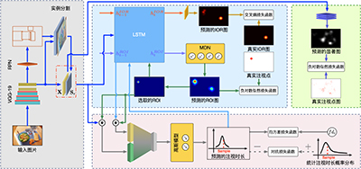

Wanjie Sun (孙万捷) |
News
- [2022.06] One paper is accepted by Signal Processing!
- [2022.06] Supported by China Postdoctoral Science Foundation!
- [2022.01] One paper is accepted by IEEE TIP!
- [2021.05] Supported by China National Postdoctoral Program for Innovative Talents!（2021年度博新计划）
- [2020.02] One paper is accepted by IEEE TIP!
- [2019.12] One paper is accepted by IEEE TPAMI!
Research Interest
I work in the field of visual perception, image processing, computer vision and deep learning theory. Currently, I focus on the following research topics:- Visual attention prediction, including image and video saliency and scanpath prediction
- Image resampling, including image super-resolution and image downsampling
- Image enhancement, including image denoising, deblurring, HDR imaging
Education
- 2017.9-2020.12 Ph.D in School of Remote Sensing and Information Engineering, Wuhan University.
- 2014.9-2017.6 M.E. in School of Electronic Information, Nantong University.
- 2010.9-2014.6 B.E. in School of Computer Science and Technology, Nantong University.
Publications
Journals:
|
Learning Discrete Representations from Reference Images for Large Scale Factor Image Super-Resolution
|
|
|  |
Visual Scanpath Prediction Using IOR-ROI Recurrent Mixture Density Network
@ARTICLE{tpami2021,
author={Sun, Wanjie and Chen, Zhenzhong and Wu, Feng},
journal={IEEE Transactions on Pattern Analysis and Machine Intelligence},
title={Visual Scanpath Prediction Using IOR-ROI Recurrent Mixture Density Network},
year={2021},
volume={43},
number={6},
pages={2101-2118},
doi={10.1109/TPAMI.2019.2956930}}
|

|
Learned Image Downscaling for Upscaling Using Content Adaptive Resampler
@ARTICLE{tip2020,
author={Sun, Wanjie and Chen, Zhenzhong},
journal={IEEE Transactions on Image Processing},
title={Learned Image Downscaling for Upscaling Using Content Adaptive Resampler},
year={2020},
volume={29},
number={},
pages={4027-4040},
doi={10.1109/TIP.2020.2970248}}
|
|
渲染器与Web服务器的耦合实现远程体渲染的交互优化
@article{csig2017,
title={渲染器与 Web 服务器耦合实现远程体渲染的交互优化},
author={高瞻 and 孙万捷 and 王杰华 and 蒋峥峥},
year={2017},
volume={22},
number={3},
pages={385-394},
publisher={中国图象图形学报}
}
|
|

|
动态任务分配CUDA线程束步进体绘制
@article{jcad2017,
title={动态任务分配 CUDA 线程束步进体绘制},
author={孙万捷 and 高瞻 and 潘海燕 and 王杰华 and 蒋峥峥},
journal={计算机辅助设计与图形学学报},
volume={28},
number={10},
pages={1630--1638},
year={2016}
}
|
|
Model Reduction and Real-time Simulation of Spinal Soft Tissues
@article{icic2013,
author = {Sun, W. and Gao, Z. and Wang, J. and Wu, W. and Jiang, Z. and Zhao, J.},
year = {2013},
month = {01},
pages = {3103-3108},
title = {Model reduction and Real-time simulation of spinal soft tissues},
volume = {7},
journal = {ICIC Express Letters}
}
|
|
|
基于模型约减的虚拟脊柱及实时仿真
@article{jss2013,
title={基于模型约减的虚拟脊柱及实时仿真},
author={高瞻 and 孙万捷 and 王杰华 and 蒋峥峥 and 武卫翔 and 陈恩高 and 潘飞},
journal={系统仿真学报},
volume={9},
year={2013}
}
|
Conferences:

|
DOVE: Decomposition Oriented Video super-rEsolution
@INPROCEEDINGS{vcip2020,
author={Wang, Huairui and Sun, Wanjie and Chen, Zhenzhong and Yang, Daiqin},
booktitle={2020 IEEE International Conference on Visual Communications and Image Processing (VCIP)},
title={DOVE: Decomposition Oriented Video super-rEsolution},
year={2020},
volume={},
number={},
pages={375-378},
doi={10.1109/VCIP49819.2020.9301825}}
|

|
Scanpath Prediction for Visual Attention using IOR-ROI LSTM
@inproceedings{ijcai2018,
title={Scanpath prediction for visual attention using ior-roi lstm},
author={Chen, Zhenzhong and Sun, Wanjie},
booktitle={Proceedings of the 27th International Joint Conference on Artificial Intelligence},
pages={642--648},
year={2018}
}
|

|
CNN-Optimized Image Compression with Uncertainty based Resource Allocation
@inproceedings{cvpr2018,
title={CNN-optimized image compression with uncertainty based resource allocation},
author={Chen, Zhenzhong and Li, Yiming and Liu, Feiyang and Liu, Zizheng and Pan, Xiang and Sun, Wanjie and Wang, Yingbin and Zhou, Yan and Zhu, Han and Liu, Shan},
booktitle={Proceedings of the IEEE Conference on Computer Vision and Pattern Recognition Workshops},
pages={2559--2562},
year={2018}
}
|
Fundings
- 2022, 中国博士后科学基金面上项目, 主持
- 2022, 测绘遥感信息工程国家重点实验室2022年自主科研课题（探索类）, 主持
- 2021, “博士后创新人才支持计划”项目, 主持
- 2021, “湖北省博士后创新研究岗位”项目, 主持
Services
Journal Reviewer:
- IEEE Transactions on Image Processing (TIP)
- International Journal of Computer Vision (IJCV)
- IEEE Transactions on Circuits and Systems for Video Technology (TCSVT)
- The Visual Computer (TVCJ)
- IET Image Processing
Conference Reviewer:
- IEEE International Conference on Multimedia and Expo (ICME)
- IEEE International Conference on Multimedia Information Processing (MIPR)
Honors
- 2021, "Postdoctoral Program for Innovative Talents", Ministry of Human Resources and Social Security | 2021年度国家人社部“博新计划”入选者
- 2021, "Graduate Academic Innovation" First Prize, Wuhan University | 武汉大学“研究生学术创新奖”一等奖
- 2020, "Wang Zhizhuo Innovative Talent" First Prize, Wuhan University | “王之卓创新人才奖”一等奖
- 2020, "Graduate Academic Innovation" Second Prize, Wuhan University | 武汉大学“研究生学术创新奖”二等奖
- 2018, Winner Award CVPR 2018 Workshop and Challenge on Learned Image Compression
- 2014, "Excellent Graduation Project (Thesis) of Colleges and Universities", Jiangsu Province | 江苏省"优秀毕业设计(论文)"一等奖
- 2012, National Scholarship, Ministry of Education | 国家奖学金
Page views: